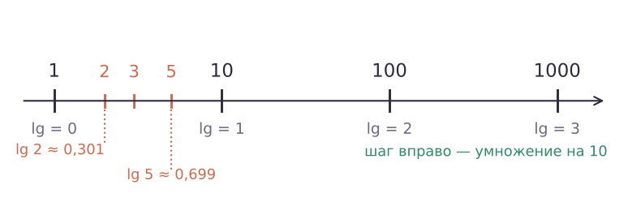

Теория
Основание логарифма может быть любым допустимым числом, но два основания встречаются так часто, что для них есть короткие обозначения и отдельные кнопки на калькуляторе: 10 и число e.
Десятичный логарифм
Десятичный логарифм — логарифм по основанию 10. Обозначение: lg b = log10 b.
Вычисли: а) lg 1000; б) lg 0,01; в) lg 1; г) lg √10.
а) 10³ = 1000 ⇒ 3. б) 0,01 = 10−2 ⇒ −2. в) 100 = 1 ⇒ 0. г) √10 = 101/2 ⇒ 1/2.
Десятичный логарифм удобен тем, что он «считает цифры». Если число b записывается n цифрами до запятой, то 10n − 1 ≤ b < 10n, и потому n − 1 ≤ lg b < n. Например, в числе 350 три цифры, значит, 2 ≤ lg 350 < 3 (на калькуляторе lg 350 ≈ 2,544).

Число e и натуральный логарифм
Посмотрим, что происходит с выражением (1 + 1/n)n, когда n растёт. Это, например, сумма вклада в 1 рубль под 100 % годовых, если банк начисляет проценты n раз в год.
| n | 1 | 10 | 100 | 1000 | 1 000 000 |
|---|---|---|---|---|---|
| (1 + 1/n)n | 2 | ≈ 2,594 | ≈ 2,705 | ≈ 2,717 | ≈ 2,718 |

Значения растут, но не бесконечно: они приближаются к числу, которое обозначают буквой e. e ≈ 2,718 — иррациональное число, как π. Оно постоянно встречается в физике, биологии, экономике — везде, где что-то растёт или убывает «пропорционально самому себе».
Натуральный логарифм — логарифм по основанию e. Обозначение: ln b = loge b.
Вычисли: а) ln e; б) ln 1; в) ln e⁵; г) eln 3; д) ln (1/√e).
а) 1; б) 0; в) 5; г) по основному тождеству 3; д) 1/√e = e−1/2 ⇒ −1/2.
ln — это не логарифм по основанию 10, а lg — не по основанию e. Запомнить помогает: lg — «десятичный», ln — «натуральный» (n — natural). И ещё: ln e⁵ = 5, а не 5e.
Формула перехода к новому основанию
На калькуляторе есть только lg и ln. Как найти, например, log2 7? Нужно уметь переписать логарифм через логарифмы с другим основанием.
Если a, b, c положительны, a ≠ 1, c ≠ 1, то loga b = logc b / logc a.
По основному тождеству b = aloga b. Возьмём логарифм по основанию c от обеих частей и применим свойство логарифма степени (урок 16): logc b = loga b·logc a. Делим на logc a ≠ 0 (он не равен нулю, потому что a ≠ 1).
Найди log2 7 с точностью до сотых.
log2 7 = lg 7 / lg 2 ≈ 0,8451 / 0,3010 ≈ 2,807. Ответ: ≈ 2,81.
Проверка на правдоподобие: 2² = 4 < 7 < 8 = 2³ — логарифм между 2 и 3 ✓. С ln получится то же: ln 7 / ln 2 ≈ 1,9459 / 0,6931 ≈ 2,807.
Вычисли log8 32.
8 и 32 — степени двойки, переходим к основанию 2: log8 32 = log2 32 / log2 8 = 5/3.
Ответ: 5/3.
Не путай формулу перехода с логарифмом частного: logc b / logc a — это частное логарифмов, а не logc (b/a). И следи, что где: «число — наверху, основание — внизу»: log2 7 = lg 7 / lg 2, а не lg 2 / lg 7.
Следствия формулы перехода
- loga b = 1 / logb a (b ≠ 1) — поменять местами число и основание; отсюда loga b·logb a = 1;
- logak b = (1/k)·loga b (k ≠ 0) — показатель основания выносится как 1/k;
- loga b·logb c = loga c — «цепочка» логарифмов.
Все три получаются, если переписать каждый логарифм как частное lg / lg. Например, loga b·logb c = (lg b/lg a)·(lg c/lg b) = lg c/lg a = loga c.
Вычисли: а) log3 5·log5 9; б) 1/log2 6 + 1/log3 6; в) log√3 9.
а) Цепочка: log3 9 = 2.
б) 1/log2 6 = log6 2, 1/log3 6 = log6 3. Сумма: log6 (2·3) = 1.
в) √3 = 31/2, поэтому log√3 9 = 2·log3 9 = 4.
Показательные уравнения — до конца
Реши уравнение 3x = 20. Ответ найди с точностью до сотых.
Точный ответ: x = log3 20. Приближённо: lg 20 / lg 3 ≈ 1,3010 / 0,4771 ≈ 2,727.
Ответ: x = log3 20 ≈ 2,73.
Известно, что lg 2 ≈ 0,301, lg 3 ≈ 0,477. Найди приближённо lg 6, lg 5 и lg 72.
lg 6 = lg 2 + lg 3 ≈ 0,778. lg 5 = lg (10/2) = 1 − lg 2 ≈ 0,699.
72 = 2³·3², поэтому lg 72 = 3lg 2 + 2lg 3 ≈ 0,903 + 0,954 = 1,857.
Задачи урока
Реши в тетради. Ответы разберём на занятии.
Из учебника
- № 293, 294 — Вычислить десятичные логарифмы степеней 10.
- № 295, 296 — Натуральный логарифм, число e.
- № 297–299 — Вычислить с помощью калькулятора.
- № 300–303 — Формула перехода: вычислить без калькулятора.
- № 304, 305 — Решить показательное уравнение, ответ через lg или ln.
Тест к уроку
Домашнее задание
№ 294, 300, 302 из учебника письменно; № 297 — с калькулятором. Дополнительно: реши уравнение 7x = 30 и найди ответ с точностью до сотых.